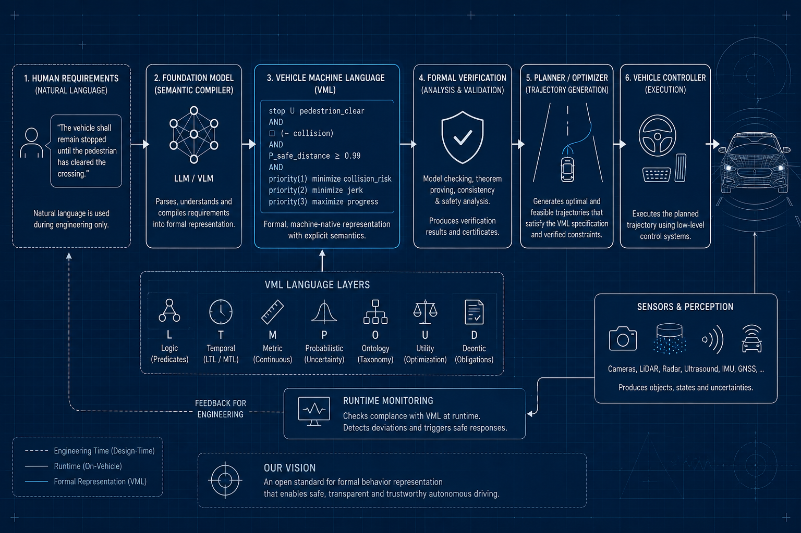

Building an open, vendor-neutral standard for formal behavioral representation in AI-driven automotive systems — enabling transparent, verifiable and certifiable autonomous driving technology.
Join the Initiative Learn More FAQProject Objective
VML is envisioned as an open standard that serves as the formal behavioral representation inside future AI-based driving systems.
Instead of allowing natural language to directly influence runtime decision making, VML introduces a formally defined intermediate representation that can be interpreted, analyzed, verified and executed with deterministic semantics.
In this architecture, foundation models such as LLMs and Vision-Language Models become semantic compilers that translate human requirements into formal specifications. Runtime systems operate exclusively on VML.
This separation provides a clear distinction between human communication and machine execution, while preserving the full benefits of modern AI-assisted engineering.
The long-term vision is a transformation chain:
Natural Language → VML → Vehicle Behavior
System Architecture
From human requirements through a foundation model as semantic compiler, through VML as the formal runtime representation, to formal verification, trajectory generation and vehicle execution.
Figure 1 — The VML pipeline: engineering-time natural language is compiled into formal VML by a foundation model; runtime components operate exclusively on VML.
Motivation
Modern automotive AI systems increasingly combine perception, reasoning and planning into unified Vision-Language-Action architectures. While these systems demonstrate impressive capabilities, natural language was never designed as an execution language for safety-critical systems.
Natural language is inherently ambiguous, context-dependent and open to interpretation — properties that make it excellent for human communication but difficult to verify, certify and validate as part of an automotive runtime system.
Natural language ambiguity at runtime creates non-deterministic behavior that cannot be systematically verified or certified.
Click me to learn more
A formal intermediate representation separates engineering communication from machine execution, making each independently optimizable.
Automotive AI becomes more transparent, testable and certifiable without restricting future advances in foundation models.
Why an Open Standard?
Future automotive AI should not depend on proprietary behavioral languages. An open standard allows the entire automotive ecosystem to build on a common foundation.
The goal is not to standardize AI models themselves, but to standardize the formal representation of behavioral intent that connects engineering, verification and runtime execution.
Expected Benefits
Deterministic semantics suitable for analysis and formal verification under ISO 26262 and related standards.
Behavioral rules can be disclosed to authorities without revealing proprietary AI implementations.
Behavior becomes amenable to model checking, theorem proving, runtime monitoring and systematic testing.
Decisions trace back to explicit formal rules instead of opaque natural-language prompts.
VML provides a common interface between requirements engineering, AI-assisted specification, simulation, testing and deployment.
The formal language remains independent of perception algorithms, planning methods and future AI architectures.
Scope
Governance
TWG·FAS is organized as an open, non-profit initiative because the behavioral specification of autonomous systems affects public safety.
While manufacturers must be able to protect proprietary algorithms, training methods, and commercial innovations, regulators and independent experts should be able to review the formal behavioral intent of safety-critical systems.
An open standard creates this separation. It enables transparent verification and regulatory review without requiring disclosure of intellectual property. We believe that broad adoption, independent scrutiny, and open governance are essential for building trustworthy autonomous systems.
Openness is therefore not only a technical decision, it is an ethical one.
Current Drafts
The following documents represent the current working drafts. All specifications are developed under an open process and will be published as open standards. The shared collaboration repository is available at github.com/thomas-scheuerle-at-twg-fas-org/twg-fas.
New to VML? Start with the Frequently Asked Questions for a concise overview before diving into the full drafts.
Participation
The initiative is currently in its initial working draft phase with one founding member. We are actively seeking contributors to establish a consortium for developing this open standard.
All technical discussions, working drafts and future specifications are developed through an open and collaborative process. Contributions from any organization or individual aligned with the vision are welcome.
Get in Touch Open GitHub RepositorySee current contributors: contributors/contributors.md
Contact
If you are interested in contributing to the working group, have questions about the specifications, or would like to explore collaboration opportunities, please reach out.